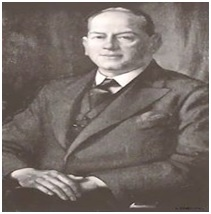
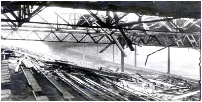

Chương 6

ùa thu năm 1930, Hội Người Hâm Mộ Và Cổ Đông Manchester United (Manchester United Supporters Club and Shareholders Assocation, MUSCSA) gửi bản yêu sách 5 điểm lên BLĐ CLB. 5 điểm đó là: 1/ Bổ nhiệm HLV mới, 2/ Cải thiện hệ thống tìm kiếm tài năng, 3/ Mua về các cầu thủ chất lượng cao, 4/ Bầu lại BLĐ, 5/ Huy động vốn bằng cách phát hành thêm cổ phiếu. Chủ tịch United, George Lawton, không hồi âm, và từ chối gặp mặt đại diện hội, lấy lý lẽ hội không đại diện cho tất cả CĐV. Nhằm đáp trả, hội tuyên bố sẽ vận động người hâm mộ tẩy chay, không thèm tới xem trận United gặp Arsenal nhằm ngày 18 tháng 10.
Một ngày trước trận đấu, 3000 người đến dự đại hội MUSCSA, trong đó có cựu danh thủ Charlie Roberts. Roberts lên diễn đàn, kêu gọi mọi người hãy đến sân cổ vũ cho đội bóng. BLĐ United là một trò hề, ông thừa nhận, song cầu thủ không có tội tình gì. Giữa lúc dầu sôi lửa bỏng này, người hâm mộ càng phải đứng sau ủng hộ các cầu thủ, không nên tẩy chay, gây ra chia rẽ nội bộ. Chẳng biết có phải do bài diễn thuyết của Roberts hay không, mà ngày hôm sau, 23000 khán giả kéo đến sân Old Trafford, lượng khán giả đông nhất trong cả mùa.
Đáng buồn thay, United làm phụ lòng tất cả với thất bại 1-2 trước Arsenal. Từ đó, lượng người xem lại giảm xuống dưới 10000 mỗi trận. Kết mùa, CLB chôn chân ở vị trí chót bảng, đá 42 trận chỉ thắng được 7, ghi 53 bàn, thủng lưới…115. Trận cuối mùa giải gặp Middlesbrough ở Old Trafford, chỉ 3900 người còn thèm tới sân. 3900! Trong một SVĐ có sức chứa 80000!
Không những rớt hạng, United còn đứng trước nguy cơ phá sản. Doanh thu CLB mỗi năm mỗi giảm, trong khi công nợ tăng lên đến 30000 bảng. Ngân quỹ thâm thủng đến độ Giáng Sinh năm 1931, BLĐ không mua nổi gà tây làm tiệc đãi cầu thủ! Tiền trả tiệm giặt ủi cũng không có, nên sau mỗi trận đấu, đội phải gom hết quần áo lại, nhờ các CĐV hảo tâm đem về giặt hộ. Cùng lúc ấy, công ty gas cắt, không cung cấp gas cho Old Trafford, vì hóa đơn gửi mãi không thấy ai trả; còn ngân hàng thì tiến hành các thủ tục siết nợ.
Lẽ tất yếu, Hertbert Bamlett bị sa thải. Tổng thư ký Walter Crickmer tạm thời “chữa cháy”, kiêm chức HLV trưởng, với trợ lý là Louis Rocca. Song vấn đề lúc này không nằm ở HLV, mà nằm ở chỗ không tiền. Rất may, mỗi khi lâm vào đường cùng, United lại gặp “quý nhân phù trợ”. Nếu như năm 1901, quý nhân là J.H.Davies, thì năm 1931, người đó là James Gibson[1].
Là chủ hãng dệt may lớn ở Manchester, khi biết tin United gặp khó, Gibson tặng “nóng” ngay 2000 bảng để CLB trả lương còn nợ cho cầu thủ. Sau đó, ông tiếp tục bơm tiền, giúp đội trả hết nợ nần. Tháng 1, 1932, sau khi trở thành chủ sở hữu United, Gibson bổ nhiệm BLĐ mới, do chính ông làm chủ tịch. Một HLV mới cũng được mời về: Scott Duncan người Scotland.

Chủ tịch James Gibson (Ảnh: Joinmust.org)
Dùnỗi lo phá sản không còn, phong độ United chưa cải thiện được ngay. Mùa 1933-1934, đội thua thê thảm ở giải Hạng Nhì, lần lượt bị Bolton, Bradford và Grimsby hạ nhục với các tỷ số 5-1, 6-1, 7-3. HLV Scott Duncan phải dùng đòn tâm lý, cho đổi màu áo đấu, hy vọng chuyển vận may. Có điều, đổi đi đổi lại mấy lần, thua vẫn hoàn thua.Vòng đấu cuối cùng, United đấu với Millwall trên sân khách, trong trận “chung kết ngược” quyết định đội xuống Hạng Ba. Millwallđang đứng áp chót với 33 điểm, chỉ cần trận hòa, còn United đứng chót, 32 điểm, phải “quyết tử để quyết sinh”. Nhờ hai bàn thắng của Cape và Manley, United giành được trận thắng quý như vàng. Kết thúc 90 phút, toàn đội ăn mừng như thể vừa đoạt…World Cup!
Nhưng luật đời vẫn thế: Bĩ cực lại thái lai. Một khi đã rơi đến đáy, chỉ còn con đường là đi lên. Dưới bàn tay quản lý của Gibson, cuối mùa 1934-1935, United đã không còn lỗ, mà lời đến 4490 bảng. Có tiền trong tay, CLB mua bổ sung một số cầu thủ chất lượng, và ngay mùa sau, lên ngôi vô địch giải Hạng Nhì để trở về mái nhà xưa. Trong đội hình vô địch Hạng Nhì ấy có cầu thủ trẻ Walter Winterbottom[2], người sau này giữ chức HLV trưởng ĐTQG Anh trải qua bốn mùa World Cup, từ 1950 đến 1962. Cùng với Matt Busby, Bobby Charlton và Alex Ferguson, Winterbottom là một trong bốn cầu thủ/HLV của Manchester United được tôn vinh với tước vị hiệp sỹ.
Niềm vui ngắn chẳng tày gang. Mùa 1936-1937, United đứng 21/22 đội, rớt lại xuống Hạng Nhì. Scott Duncan mất chức HLV, và Walter Crickmer lại kiêm nhiệm. Chán ngấy với thành tích lên xuống phập phù, Crickmer báo cáo lên chủ tịch Gibson, xin thay đổi chiến lược: Từ nay không mua nhiều cầu thủ bên ngoài nữa, thay vào đó chú trọng việc đào tạo tài năng trẻ, cây nhà lá vườn. Gibson đồng ý, cho thành lập ngay đội trẻ United, với tên gọi Manchester United Junior Athletic Club (MUJAC). Louis Rocca được giao nhiệm vụ tuyển trạch viên trưởng, chuyên đi săn lùng cầu thủ triển vọng đem về cho MUJAC.
Hằng năm, MUJAC thi đấu tại giải đấu nghiệp dư mang tên Chorlton League. Ngay mùa đầu tiên, đội ghi được đến…223 bàn, thể hiện đẳng cấp chênh lệch một trời một vực với các CLB còn lại. Chẳng bao lâu, MUJAC đã cho ra lò những ngôi sao trẻ đáng chú ý, sau này đều trở thành trụ cột của United. “Từ nay chúng tôi không thèm mua về những cầu thủ tầm thường nữa”, Gibson nói, “Manchester United rồi đây sẽ gồm toàn cầu thủ Manchester chính hiệu.”
Dưới quyền Gibson và Crickmer, United tiến hành cuộc thay máu. Thế chỗ các cựu binh già nua là những chàng trẻ mới ra ràng như Jack Rowley (17 tuổi, đến từ Bournemouth), Johnny Carey và Stan Pearson (cùng 18 tuổi, cùng được đôn lên từ tuyến trẻ). Trong số này, Rowley có màn ra mắt ấn tượng nhất: Chỉ mới trận thứ hai khoác áo United, anh nã ngay 4 bàn vào lưới Swansea, giúp đội nhà chiến thắng 5-1. Sau này, Rowley sẽ phục vụ CLB trong suốt 18 năm, chơi 424 trận, ghi 211 bàn. Trước nay, chỉ mới bốn người vượt được mức 200 bàn thắng ở Old Trafford, đó là Bobby Charlton, Denis Law, Wayne Rooney và Jack Rowley.
Sức trẻ thanh tân giúp United trở lại Hạng Nhất vào mùa 1938-1939. Trước mắt họ, dường như mọi thứ đầy màu hồng. Khủng hoảng tài chính đã lùi xa; suốt 5 liền, họ đều làm ăn có lãi. Cuộc cách mạng trẻ cũng thành công rực rỡ. Bên cạnh Rowley, Carey và Pearson, trong trận gặp Charlton vào ngày 2 tháng 9, 1939, United trình làng Allenby Chilton, được coi là cầu thủ triển vọng nhất nước Anh lúc bấy giờ. Mọi dấu hiệu đều cho thấy CLB đang đi đúng hướng, sắp tìm lại được ánh hào quang thời Ernest Mangnall.
Tuy thế, mưu sự tại nhân, mà thành sự tại thiên. Sau trận đấu ngày 2 tháng 9, các giải VĐQG lại bị hoãn vô thời hạn, do Anh tuyên chiến với Đức, chính thức bước vào cuộc chiến tranh thế giới thứ hai. Manchester, London, và các thành phố lớn khác trên xứ sở sương mù trở thành mục tiêu không kích của Đức quốc xã. Giáng Sinh năm 1940, sân Old Trafford bị trúng bom, tháng 3 năm 1941 lại trúng thêm lần hai: Gần như toàn bộ khán đài chính, bao gồm khu văn phòng và các phòng thay quần áo, đều bị hủy hoại. Mặt sân cũng tan hoang, không thể dùng chơi bóng được nữa.
Cũng như lần thế chiến trước, nhiều cầu thủ lại xung phong nhập ngũ. Dù thiếu hụt nhân sự, Manchester United vẫn duy trì hoạt động, vẫn tham gia các giải bóng đá như Lancashire Cup, League War Cup, North Regional League. Nhưng đây là các giải thời chiến, không chính thức, và mang tính chất giao hữu, “phục vụ quần chúng” là chính, nên chúng tôi không đi vào chi tiết[3].

Sân Old Trafford hoang tàn vì bom Đức (Ảnh: Aircrashsites.co.uk)
Chú thích:
[1] Theo McCartney & Clare (2013), người thuyết phục Gibson cứu United là Walter Crickmer. Nhưng White (2010) lại quy công cho Louis Rocca.
[2] Winterbottom là cầu thủ bán chuyên, vừa đá bóng cho United, vừa làm thầy giáo. Năm 1938, anh bị chấn thương nặng, phải từ giã sân cỏ.
[3] Do cầu thủ nhập ngũ, nhiều CLB không đủ người, phải mượn cầu thủ từ đội khác về đá giúp một số trận, gọi là “cầu thủ khách mời”. Bởi giải đấu thời chiến không đặt nặng tính ăn thua, cầu thủ đội này có thể tự do khoác áo đội kia. Chẳng hạn, Johnny Carey từng xuất hiện trong tư cách “khách mời” cho hàng loạt CLB, từ Liverpool, Everton, Manchester City, cho đến Middlesbrough